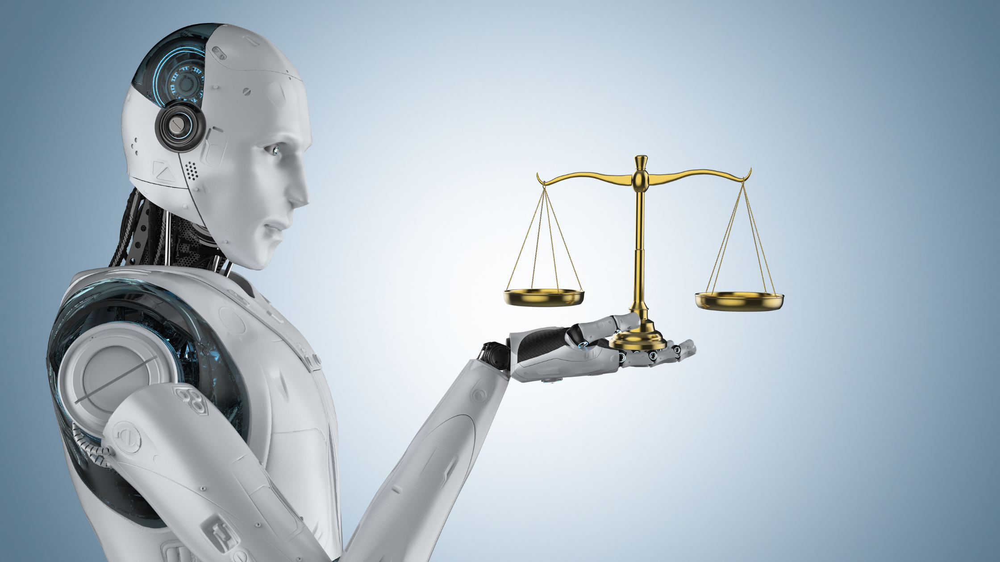

Information Page
Uses of Artifical Intelligence
The Uses of AI Artificial Intelligence in the Legal and Compliance Industry is able to perform many complex tasks, such as reviewing contracts for risks, obligations, and inconsistencies, extracting key clauses and comparing them against regulatory standards, conducting legal research by parsing case law, statutes, and regulations, and predicting case outcomes using historical data and precedent.
Real World Application
One of the most notable and impactful real-world applications of artificial intelligence in the legal and compliance industry is the use of AI for automated contract review, particularly as demonstrated by the UK-based law firm Shoosmiths. Shoosmiths implemented an AI-powered contract review platform to streamline and enhance the efficiency of its legal operations. The platform utilized natural language processing (NLP) and machine learning algorithms to analyze complex legal agreements. This allowed the firm to review contracts in approximately 3 minutes, achieve 90% accuracy, compared to 86% accuracy by a qualified lawyer, and reduce review time from 4 hours to minutes, significantly cutting labor costs and turnaround time. These capabilities allow law firms and corporate legal departments to reduce manual labor, minimize human error, and accelerate decision-making. A white paper from Stanford Law School highlights how LLMs are being integrated into legal workflows, reshaping the legal profession by improving efficiency and accuracy in tasks like document review and legal research, and its role in enhancing case management and decision-making processes.
Security Issues
However, cybersecurity attacks are still a possibility, as the U.S. Congressional Research Service notes that the absence of comprehensive federal AI regulations creates a fragmented landscape, making it harder to enforce cybersecurity standards across jurisdictions. Legal AI systems may also be susceptible to adversarial attacks, where malicious actors manipulate inputs to deceive or corrupt AI outputs. In addition, the CRS report warns that the current patchwork of state-level AI laws complicates compliance and increases exposure to legal risk. This regulatory vacuum can lead to inconsistent data handling practices and inadequate cybersecurity protocols.
AI: Ready to Help
AI-powered legal tools—such as chatbots, document automation platforms, and predictive analytics—are able to democratize legal knowledge by making it accessible to non-lawyers, reduce costs of legal services, enabling low-income individuals and small businesses to obtain legal help, and streamline compliance for organizations that lack in-house legal teams. This is especially significant in areas where a lack of infrastructure or economic effluence causes money issues and poor lawyers to become less of a burden. The Natural Language Processing (NLP) allows AI systems to interpret legal queries and provide understandable responses, automated document review helps users draft contracts, wills, or complaints without needing a lawyer, and legal triage systems guide users to appropriate legal resources or professionals based on their needs.
The Shortcomings
However, while the goal is to maximize energy efficiency, legal and compliance systems increasingly rely on AI for automated document review, predictive litigation analytics, and regulatory monitoring and enforcement. These applications require massive computational power, which in turn demands high electricity usage, rare earth minerals for servers and GPUs, and water for cooling data centers. According to a 2025 study from Hanoi Law University published in the International Journal of Law, AI in legal and compliance contexts contributes to electronic waste, unsustainable mineral extraction, and increased greenhouse gas emissions. Another negative effect was COMPAS, an AI-based risk assessment tool used by judges in several U.S. states to predict the likelihood of a defendant reoffending. It is intended to inform decisions about bail, sentencing, and parole. However, multiple academic and government-backed studies have revealed significant racial and age biases in their predictions. A landmark investigation by ProPublica in 2016 found that COMPAS was 77% more likely to assign higher risk scores to African American defendants than to white defendants, even when controlling for prior offenses, age, and gender.